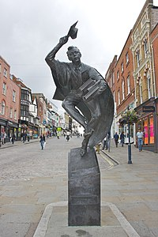
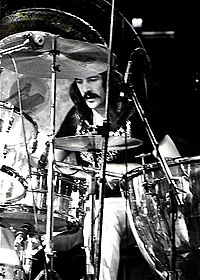

Led Zeppelin
Led Zeppelin (Лед Зе́ппелін, походить від англ. Lead Zeppelin — «свинцевий дирижабль») — британський рок-гурт, що вважається одним із засновників хард-року та хеві-металу.
Попри своє фактичне розформування 40 років тому внаслідок смерті барабанщика Джона Бонема у 1980 році, Led Zeppelin досі високо шанується за музичні досягнення, нестандартність, комерційний успіх і широкий вплив. Гурт продав понад 300 мільйонів альбомів у світі.
Зміст
Історія гурту
Заснування
Рішення Джеффа Бека організувати власний колектив спричинило остаточний розпад «The Yardbirds» вісім місяців потому — 7 липня 1968 року. Отож гітарист Джиммі Пейдж, який мав усі права як на бренд гурту, так і на його концертні зобов'язання, мусив хутко віднайти нових побратимів. Разом з Пітером Ґрантом, який до цього також працював із квінтетом, який розбігся, він розпочав пошук. Пейдж мав тоді репутацію сесійного гітариста. Його вже бачили в таких командах, як The Who, The Kinks, Donovan та багатьох інших, тож заклик музиканта не залишився поза увагою. Першим, кого запросили, став бас-гітарист Джон Пол Джонс (Пейдж познайомився з ним у квітні 1968 року під час співпраці з Donovan). Він прочитав статтю в журналі Disc і за порадою дружини зателефонував Пейджу.
Перший кандидат на роль вокаліста — Террі Рід (він, як з'ясувалося, вже був пов'язаний контрактом із менеджером Міккі Мостом) порекомендував Пейджу молодого бірмінгемського співака Роберта Планта, відомого за участю в гуртах Band of Joy та Obs-Tweedle. Побувавши влітку того самого року на концерті останніх у Волсоллі, Ґрант та Пейдж були в захваті. Джиммі найбільше вразило виконання солістом «Somebody to Love» з доробку Jefferson Airplane. «Від цих первісних завивань мені зробилося моторошно. Це був той самий голос, який я шукав. Він співав уже кілька років і при цьому лишався практично невідомим. Як таке могло статися, мені досі невтямки»[16], — згадував він. Компаньйони мигцем надіслали співакові запрошення до складу нового гурту. Плант нараз погодився.
Незабаром Пейдж запросив Планта на власний катер. І пливучи Темзою, молодики ділилися один з одним своїми музичними вподобаннями[15]. Виявилося, Плант глибинно знає американський кантрі-блюз (його улюбленими виконавцями були Скіп Джеймс, Букка Вайт, Мемфіс Мінні) та закоханий у міфологію «Володаря перснів» (звідси й назва гурту «Obs-Tweedle»). Це приємно здивувало Пейджа. Він зіграв на гітарі «Babe I'm Gonna Leave You», пісню з репертуару американської бардки Джоан Баез і розповів, що волів би в цій пісні показати світлі й темні боки — гранично контрастно, в геть новому контексті.
Ми ніби користувалися однією колодою карт. Одразу-бо відчувається, коли перед тобою людина, що прочинила найзаповітніші двері трохи ширше од інших. Такою людиною був Джиммі. Як він убирав у себе ідеї, як при цьому тримався, — усе це було незрівнянно вищим за все, з чим мені доти доводилось стикатись. На мене він справив якнайсильніше враження.
— Роберт Плант, інтерв'ю. — 2006.Опісля, вдома в Пейджа, вони продовжили вивчати смаки один одного, прослуховуючи записи Бадді Ґая, The Incredible String Band та Мадді Вотерса.
Тепер хлопцям потрібен був драмер, на місце якого Пейдж розглядав різних сесійних перкусіоністів: Клема Каттіні (англ. Clem Cattini), Ейнслі Данбара (англ. Aynsley Dunbar), Бі Джея Вілсона з Procol Harum, Джинджера Бейкера з Cream. Серед інших кандидатур був і такий собі Пол Френсіс (англ. Paul Francis). Новоспечений фронтмен радив свого товариша із Band Of Joy — молодого ударника з Реддіча Джона Бонема. У червні 1968 року Пейдж і Ґрант, захоплені виступом Бонема в складі гурту Тіма Роуза на концерті в Гампстеді, запропонували йому співпрацю. Барабанщик, який уважав The Yardbirds «гуртом з минулого, що не має майбутнього», попервах був скептичний; окрім того, він уже отримав цікаві пропозиції від Джо Кокера й Кріса Фарлоу. Планту довелося надіслати 8 телеграм у волсоллський паб «Three Men in a Boat», де Бонем частенько бував; 40 телеграм туди ж скерував і Ґрант. Урешті-решт барабанщик пристав на пропозицію, вирішивши, що музика нового гурту набагато цікавіша за все, що виконували на той час Кокер і Фарлоу.
У вересні 1968-го четвірка відбула свої перші репетиції в невеличкій кімнатці квартири, розташованій під музичною крамницею на Джерард-стріт у лондонському Сохо. Пейдж запропонував зіграти «Train Kept A-Rollin'», — трек із репертуару Yardbirds, популярний у рокабілі-версії Джонні Бернетта. «Ледве-лишень заграв Джон Бонем, як ми дібрали: гряде щось видатне. Із ним ми негайно зімкнулись у єдине ціле»[16], — згадував Джон Пол Джонс. Часопис Kerrang! так змальовував першу репетицію гурту
...І ось четверо стоять віч-на-віч: хвилюванням і передчуттями просякнуте повітря. 24-річний гітарист Джиммі Пейдж та 22-річний бас-гітарист Джон Пол Джонс — уже досвідчені сесійні музиканти... Але обидва уперше опиняються в одному репетиційному приміщенні з 19-річними Робертом Плантом та Джоном Бонемом. Кімнатка зовсім маленька: місця має рівно стільки, «скільки треба», щоб умістити їх чотирьох із своїм обладнанням, і зовсім уже крихітна, щоб можна було приховати некомпетентність, коли вона раптом проявиться. Видавши риф, просто щоб пересвідчитися в тому, що звук із його динамику йде «оглушливий», Пейдж кидає погляд на Джонса й пропонує для початку пройтися рок-н-рольною класикою: «Train Kept A Rollin’». Басист не надто вже з нею знайомий, але — йде коротка інструкція, і старт узятий. Бонем за своєю установкою — справжній монстр; грає з потугою і нестямою, яких ні Пейдж, ні Джонс раніше не бачили. Вокаліст — є на що подивитись: високий, стрункий, звивиста грива струшується в такт биттю Бонама; пронизливий вокал, подібний до завивання банші, лунає над загальним гуркотом. Поєднання чотирьох элементів таке потужне, що, закінчивши пісню всі четверо завмирають і... вибухають сміхом. Почасти — від полегшення, почасти — тому що розуміють: щойно з ними відбулося щось дуже важливе. Пізніше Пейдж не зможе пригадати, які ще пісні вони разом зіграли того вечора, — настільки вразив його той початковий звуковий штурм. І не раз ще ці четверо музикантів спричинять той самий ефект.
— Род Йєйтс, '«При початках»', Kerrang! # 1244, 17 січня 2009 р.
Перші виступи
За три тижні після тієї доленосної репетиції колектив під назвою «The New Yardbirds» дав свій перший концерт у копенгагенському клубі Gladsaxe Teen. Пітер Ґрант підписався на 8-концертний тур Скандинавією ще до того, як The Yardbirds розпались[20], і тепер він та Джиммі Пейдж вирішили не касувати виступи, а використовувати їх з тренувальною метою. Разом з тим, гітарист згодом зізнавався, що дуже нервувався: «Ми дійсно були збентежені, маючи за спиною лише близько 15 годин спільних репетицій».
...Збентеження розвіялось, тільки-но квартет вийшов на сцену, де, крім «Train Kept A Rollin’», виконав пісні, які незабаром увійшли до дебютного альбому, — «Communication Breakdown», «I Can’t Quit You Baby» та епічний джем «Dazed and Confused». Пізніше того самого вечора The New Yardbirds виступили в «Pop-Club», Брондбю. Місцевий оглядач писав про цей концерт: «Джиммі Пейдж зібрав новий гурт. Музика достоту така сама, тільки краща, аніж будь-коли». Планту, одначе, дісталось на горіхи: «Беззаперечно, співак він добрий. Таж йому майже не обов'язково звиватися всім тілом, немовбито в нього щойно луснув апендикс, еге-ж?» Невдовзі стане зрозуміло: преса так ніколи до кінця й не зможе прийняти Led Zeppelin.
— Род Йєйтс, «При початках», Kerrang! # 1244, 17 січня 2009 р.
Повернувшись додому, хлопці допомогли Пі Джею Пробі в останній студійний день роботи над його альбомом. «Я просто попрохав їх зіграти що-небудь, поки не придумаю текст. Тоді вони не були ще Led Zeppelin. Вони називались The New Yardbirds і збирались стати моїм гуртом», — згадував Пробі. Дійсно, в альбомі співака «Three Week Hero» (1969) є попурі «Jim's Blues/George Wallace Is Rollin' In This Mornin'», де йому акомпанують усі учасники Led Zeppelin, включно з Плантом на губній гармоніці. Уже за 12 діб по завершенні скандинавського туру квартет у лондонській Olympic Studios став до запису дебютного альбому.
Назва «Led Zeppelin»
Вважається, що свою нову й всесвітньо відому назву «Цеппеліни» отримали з легкої руки ударника The Who Кіта Муна. Якось він пожартував, що новий проєкт Пейджа «полетить, як „свинцевий дирижабль“ (англ. Lead Zeppelin)[21]». Джиммі, не довго мудруючи, змінив назву команди на «Led Zeppelin» (літеру «а» прибрали за порадою менеджера гурту — Пітера Ґранта — оскільки, за його словами, «ці тупі американці (англ. thick Americans) прочитають назву гурту як Лід Зеппелін»[22][23]). Однак пізніше Джон Ентвілст, басист того самого ансамблю, стверджував, що ця історія — не більш як легенда: ідея насправді належала йому, причому він планував так назвати власний сольний проєкт, про що розповів Річардові Коулу, гастрольному менеджеру (спочатку The Who, а відтак The Yardbirds), який, власне, переказав це Пейджу. Журнал Kerrang!, уточнюючи хронологію подій та імена учасників, Ентвістла згадував мигцем, ніяк не підтверджуючи його версію:
Травень 1966 року, IBC Studios, Лондон. Джиммі Пейдж керує студійною сесією: записується «Bolero» Джеффа Бека. У контрольній залі він сідає покурити з Кітом Муном, барабанщиком The Who, який — із бас-гітаристом Джоном Полом Джонсом та піаністом Нікі Гопкінсом — також бере участь у записі. Маючи на увазі музикантів, що його оточували, Пейдж жартома пропонує зібрати новий гурт, але з Джоном Ентвістлом з The Who замість Джонса. Мунові подобається ідея, але він кепкує: гурт завалиться, як «свинцевий дирижабль» («lead zeppelin»). Два роки потому, розмірковуючи над назвою гурту, Пейдж згадує репліку Муна. Він згадує цю назву при Ґранті, на що той посміхається і схвально киває. Пізніше Ґрант запропонує писати назву «Led Zeppelin», аби не виникло плутанини з вимовою.
— Род Йєйтс, «In the Beginning», Kerrang! # 1244, 2009
Сам Пейдж на питання Дейва Шулпса з Trouser Press про те, хто ж з двох усе ж таки запропонував назву, відповідав: «Мун, без сумніву, хоч би що щодо цього каже Ентвістл… Ба більше, я цілковито переконаний у тому, що Річард Коул спитав у Муна дозволу на використання назви. Просто Ентвістл був засмучений тим, що ті, перші „Led Zeppelin“[24] так і не злетіли».
Контракт з Atlantic Records
15 жовтня 1968 року в Університеті міста Гілфорд, що в графстві Суррей, відбувся перший концерт, на афішах якого був напис «Led Zeppelin». Гонорар за виступ становив 150 фунтів стерлінґів. В організацію першого британського турне гурту Пейдж вклав власні заощадження (вельми скромні), зароблені в Yardbirds, а персонал який мав обслуговувати їх, як він згадував, налічував одну людину. Концерт у лондонському клубі «The Roundhouse» 9 листопада став святковим: він був присвячений весіллю Роберта Планта. У листопаді 1968 року Ґрант виклопотав для своїх протеже величезний аванс у розмірі 200 000 доларів у компанії Atlantic Records (нечувана на той час сума для музикантів-початківців[25]). Доти лейбл надавав перевагу виконавцям блюз-року, джаз-року та соул, але вже наприкінці 60-х років звернув увагу на прогресивний рок. Поширена думка, що з Led Zeppelin ця корпорація зв'язалася за порадою Дасті Спрінґфілд, дуже популярної співачки 60-х[26][27]. Проте Джиммі Пейдж стверджував, що Atlantic давно мріяли переманити їх до себе:
Вони стежили за моїми роботами в Yardbirds тож одразу нами зацікавились. Я дав їм зрозуміти, що обрав би безпосередньо лейбл Atlantic, а не їхню рок-філію Atco Records, де записувались Sonny & Cher та Cream, бо не хотів перебувати в такому товаристві, мріяв асоціюватись з чимось більш класичним.
— Джиммі Пейдж, Інтерв'ю журналу, Guitar World, 1993 рік
Ранні кроки (1968-70)
Робота над дебютним альбомом почалася восени 1968 року у лондонській студії Olimpic Studios ще за старої назви колективу. Для Планта це був перший досвід роботи у професійній студії звукозапису. «Звук був напрочуд важким і снажним… Мій голос тоді був поганеньким, проте наш ентузіазм у поєднанні з відмінним звучанням гітари Джиммі… це було просто забійно», — згадував вокаліст.
Led Zeppelin 2
Альбом «Led Zeppelin II» записувався у кількох американських студіях, — за тим як колектив просувався країною. Хлопці безперестанно гастролювали, відчувалася нестача свіжого матеріалу, тому більшість пісень було перероблено з концертної програми, використовуючи блюзові та рок-н-рольні стандарти (щонайменше три треки, — «Whole Lotta Love», «The Lemon Song», «Bring It On Home», — вибудовані на основі блюзових стандартів, що входили в тогочасний репертуар гастролерів). Проте вони насичені цікавими розгорнутими інструментальними соло, збудовані на простих та яскравих рифах, переробках класичних блюзових мелодій. Платівка вийшла важкою, брутальною та абсолютно прямолінійною.
Вона містила щонайменше три хіти, які гурт виконував на всіх своїх концертах: «Whole Lotta Love», «Heartbreaker» та «Moby Dick». «Whole Lotta Love» (Аудіо слухатифайл) стала першим хітом і посідає 75 місце в списку найкращих п'ятисот пісень за всю історію музики. Джиммі Пейдж назвав її «грубою та некультурною піснею».
Всупереч небажанню музикантів, які вбачали свої творіння «неподільними», Atlantic Records випустили скорочений варіант (до 3:10) пісні для радіо, у той час як на концертах вона виконувалася по 20 хвилин. Колектив і Пітер Ґрант не раз заявляли, що цей сингл не є офіційним релізом (до речі, з «Whole Lotta Love» був пов'язаний і інший скандал: вона була обробкою давньої пісні Віллі Діксона, ім'я якого на позначення авторства ніде не спогадали. Компанія Chess Records 15 років потому позивалася на гурт до суду й виграла справу).
У цьому ж альбомі свій поетичний хист проявив соліст Роберт Плант. «What Is and What Should Never Be» та «Thank You» стали ліричними успіхами гурту. У «Ramble On» вперше вбачається зацікавленість Пейджа і Планта скандинавською міфологією, творчістю Толкіна та містикою.
Led Zeppelin 3
Відбувши ще кілька коротких серій концертів у США, де кожний виступ тривав по 3-4 години через довгі імпровізації, гурт узяв творчу відпустку для роботи над третім альбомом, — уперше за 2,5 роки практично безперервних гастролів. Плант запропонував Пейджу гайнути з ним до, розташованого в горах, обійстя, щоб знайти натхнення на природі. «Я подумав: написати кілька каліфорнійських, сан-франциських блюзів ми зможемо, перебуваючи лише в цілковито особливому місці», — говорив Плант. Музиканти усамітнилися на Півночі Вельсу, оселившись у відлюдненому котеджі Брон-ер-айр (англ. Bron-Yr-Aur, у перекладі з валійської — «золоті перса»; на конверті альбому, що з'явився, допущено помилку в назві треку «Bron-Y-Aur Stomp»). Робота, яка тут почалась у мобільній студії Rolling Stones, була продовжена у маєтку Гелді Ґрейндж і завершилася в жовтні 1970 року.
Еклектичний, значною мірою акустичний Led Zeppelin III вийшов за настроєм пасторальним. Альбом увійшов у верхівки чартів США та Британії. Критики розгромили його, назвавши найгіршим. Проте, згодом «реабілітували» й визнали класикою. Найкращими композиціями вважаються «Immigrant Song», «Tangerine», а також блюз-рокова «Since I've Been Loving You». У переліку найліпших пісень Пейдж відзначав також «That's the Way»: він гадав, що саме в цій історії сонячної дружби двох хлопчиків (і водночас — алегорії перших вражень учасників гурту від Америки) Плант уперше проявив себе видатним автором текстів.
«Immigrant Song» (Аудіо слухатифайл) становить собою справжню хард-рок машину, в якій штудерно сполучилися високий вокал, глухий гуркіт бас-гітари й чергування ритм- та соло-гітари. Вона стала улюбленою піснею японських фанатів. Ця ж пісня оповила гурт ореолом загадковості: після цього вбивчо-моторошного «морського маршу» вікінґів (з погрозливим «we are you overlords…» («укр. ми ваші володарі»)), преса часто натякала на окрімну зацікавленість четвірки скандинавським фольклором, часто пов'язуючи його з правими поглядами (які невідь-чому тоді приписали музикантам та їхньому менеджеру). Якоїсь миті Atlantic Records забажали випустити трек синглом, але Пітер Ґрант заявив: якщо повториться історія з «Whole Lotta Love», то лейбл втратить гурт назавжди, — і переміг.
Led Zeppelin 4
Роботу над четвертим альбомом гурт розпочав у лондонській студії Island Studios, продовжив у Брон-ер-Айр та завершив у Гедлі Ґрейндж із стоунівською Mobile Studio. Led Zeppelin IV (абож: The Fourth Album, Four Symbols, Zoso, Runes, Sticks, Man With Sticks) вийшов 8 листопада 1971 року. Оформлення, в якому вийшла платівка, менеджер гурту Пітерг Ґрант кілька місяців обстоював в Atlantic. Замість назви альбому та імені виконавця на зворотньому боці обкладинки були лише чотири рунічні символи. На те, що платівка належала саме Led Zeppelin вказувало ім'я продюсера — Джиммі Пейдж. Із боку музикантів це був виклик ЗМІ, які створили дуже негативний образ гурту та вважали його популярність штучно роздмуханою.
Саме у цьому альбомі чітко відбилося захоплення митців фолк-музикою, наприклад у пісні «The Battle Of Evermore», яка була записана разом із Сенді Денні. Проте, розвій отримали хард-рокові тенденції, найпаче в піснях «Black Dog» (Аудіо слухатифайл) та «When The Levee Breaks».
Обидві лінії ідеально поєдналися в пісні, яка стала легендою — «Stairway to Heaven» (Аудіо слухатифайл). Вона займала перші місця в хіт-парадах англомовного радіо, дарма що не була випущена у форматі синґлу[41][42]. Досьогодні в її словах шукають зашифровані послання[43], oднак текст композиції складений із фразеологічних уривків, буцімто взятих з іншого, повнішого першотвору.
Смерть Джона Бонема
Усі надії на майбутнє були зруйновані 25 вересня 1980 року, коли помер Джон Бонем. За день до цього, 24 вересня, асистент Рекс Кінґ заїхав до Бонема додому, і відтак обидва рушили на репетицію до Bray Studios готуючись до прийдешнього американського турне. Дорогою вони зупинилися, щоб попоїсти. Барабанщик поснідав рулетом із шинкою, випивши при цьому близько 700 мл горілки (16 шотів). Затим музикант не розлучався з пляшкою ні в студії, де працював до пізнього вечора, ні в маєтку Пейджа The Old Mill House (Клюер, Віндзор), куди квартет завіявся на ночівлю (останнім часом, поборюючи героїнову залежність, він перебував у стані депресії й отримував розраду лише від спиртного).
Після опівночі Бонем знепритомнів і звалився на софу. Асистент Джиммі Рік Гоббз (англ. Rick Hobbs), допоміг його віднести нагору в спальню для гостей та вкласти в ліжко на бік. До середини наступного дня, коли Плант, Пейдж та Джонс уже збиралися від'їздити на чергову репетицію, Бонем так і не спустився. Тоді (13:45), Плант, гадаючи, що Бонем спить, відправив Бена ЛеФевра (що замінив Коула на посаді гастрольного менеджера) його розтермосити. ЛеФевр і Джонс піднялися в спальню й сахнулися: барабанщик лежав на спині в калюжі блювотиння.
Джонс викликав швидку, але драмер був уже мертвий протягом кількох годин (пізніше встановили, що смерть настала рано-вранці внаслідок задухи, яка була викликана попаданням блювотних мас до легень, і що напередодні він вицмолив близько 1.5 літра горілки (40 шотів). Усі геть були шоковані. Плант поїхав утішати дружину й дітей Бонзо. Джонс поїхав до своєї родини. І поки трагічна новина ширилась країною, Джиммі спостерігав за гуртом фанатів, що вели тихе вартування біля його будинку: ці прихильники цеппелінів ще не знали про те, що трапилося.
Дискографія
Студійні записи
- Led Zeppelin (LP, Atlantic Records, 12 січня 1969) — 6-е місце у Великій Британії, 10-е місце у США (Billboard 200)
- Led Zeppelin II (LP, Atlantic Records, 22 жовтня 1969) — 1-е місце у Великій Британії та США
- Led Zeppelin III (LP, Atlantic Records, 5 жовтня 1970) — 1-е місце у Великій Британії та США
- Led Zeppelin IV (LP, Atlantic Records, 8 листопада 1971) — 1-е місце у Великій Британії США, 2-е місце в США
- Houses of the Holy (LP, Atlantic Records, 28 березня 1973) — 1-е місце у Великій Британії та США
- Physical Graffiti (2 LP, Swan Song, 24 лютого 1975) — 1-е місце у Великій Британії та США
- Presence (LP, Swan Song, 31 березня 1976) — 1-е місце у Великій Британії та США
- In Through the Out Door (LP, Swan Song, 15 серпня 1979) — 1-е місце у Великій Британії та США
Найпопулярніші пісні
- «Dazed and Confused» (1968)
- «Communication Breakdown» (1968)
- «Whole Lotta Love» (1969)
- «Heartbreaker» (1969)
- «Ramble On» (1969)
- «Immigrant Song» (1970)
- «Black Dog» (1971)
- «Stairway to Heaven» (1971)
- «No Quater» (1973)
- «Trampled Under Foot» (1975)
- «Kashmir» (1975)
- «Achilles Last Stand» (1976)
- «Nobody's Fault But Mine» (1976)
- «In The Evening» (1979)
- «All My Love» (1979)